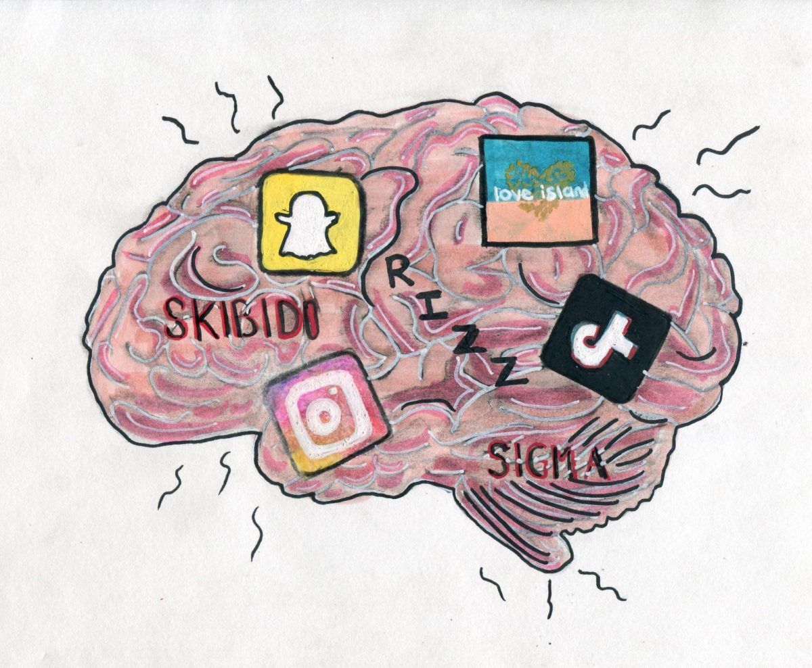

Quiz Cultura General
Legue of Legends Quiz
Geometry Dash Quiz
Brainrot Quiz
Anatomía Quiz
Brainrot Quiz

Vas a poder escribir tus respuestas para luego enviarlas, la respuesta
tiene que estar escrita igual que la respuesta de la alternativa.
Pongamos a prueba tu nivel de cultura general!
1. ¿Cuál de estas opciones mejor describe el "Goofy Aah" momento?
- a) Cuando abres la puerta de tu casa y te caes por las escaleras
- b) Cuando ves un meme tan raro que te da miedo
- c) Cuando estás en una reunión aburrida y te empiezas a reír sin motivo
- d) Cuando una vaca empieza a bailar salsa en un videoclip
2. ¿Qué es lo más "Goofy Aah" que puede suceder durante una partida de Minecraft?
- a) Un Creeper aparece y te mata mientras construyes una casa
- b) Los mobs se hacen amigos entre ellos y te ignoran
- c) Te caes en tu propia trampa mientras buscas diamantes
- d) Aparece un dragón en la aldea y te pide 20 de pan
3. ¿Qué haría Waluigi si fuera un personaje en League of Legends?
- a) Lanza plátanos explosivos como habilidad
- b) Corre en círculos mientras grita "¡WAAH!"
- c) Aparece y te dice que el juego ha sido cancelado
- d) Hace una danza extraña y se va aferrado a una espada gigante
4. ¿Si fueras un meme, qué tipo de meme serías?
- a) Un Doge con gafas de sol
- b) Un Trollface diciendo "U MAD?"
- c) El "gato está enojado" gritando "¡GATO ENOJADO!"
- d) El "nene con el helado" mirando al infinito
5. ¿Cómo reaccionarías si un Creeper te dijera "Hola"?
- a) Le daría un abrazo y un pastel
- b) Le lanzaría un cubo de agua y lo ignoraría
- c) Le pediría consejos sobre cómo hacer una fiesta
- d) Lo miraría como un "Goofy Aah" y correría por mi vida
6. ¿Qué harías si de repente tu casa se transformara en un videojuego?
- a) Tiraría un Super Mushroom y crecería al tamaño de un edificio
- b) Pondría un cartel de "¡Bienvenidos a la zona de pruebas!"
- c) Empezaría a gritar "¡¡I'M THE KING OF THE WORLD!!"
- d) Desaparecería misteriosamente en una nube de polvo rosa
7. Si un Pikachu se pone a bailar reggaetón, ¿cómo reaccionas?
- a) Comienzas a bailar también y se hace un flashmob
- b) Empiezas a correr alrededor de la habitación como Sonic
- c) Te quedas mirando y luego te unes porque es un "mood"
- d) Te conviertes en un Electrode y explotas de emoción
8. Si Shrek viniera a tu fiesta, ¿qué haría primero?
- a) Tomaría todos los snacks y gritaría "¡ESTO ES MI PANTANO!"
- b) Te pediría que le traigas más cebollas
- c) Comenzaría a hacer un floss a lo grande
- d) Se sentaría y te diría "No me importa lo que digas, este es mi hogar"
9. ¿Qué harías si te encuentras con un Borat en el metro?
- a) Te preguntarías si está buscando su "muy nice"
- b) Te pide que lo acompañes a su casa para mostrarte su "muy nice"
- c) Te haces amigo de él y empiezas a cantar "In my country, we have strong legs"/li>
- d) Te das cuenta de que estás en una película de Borat y te haces el loco
10. Si un Among Us se presentara como candidato en una elección, ¿qué prometería?
- a) Que hará que todos seamos "sospechosos"
- b) Organizará el mayor evento de emergency meeting
- c) Prometería "más impostores en cada esquina"
- d) Dejaría que todos elijan si quieren votar o no, mientras se escabulle en las sombras
Siganme a mi cuenta de Youtube y
tambien a mi cuenta de Instagram y
por ultimo a mi cuenta de Twitch